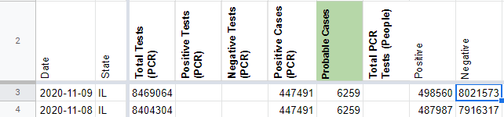
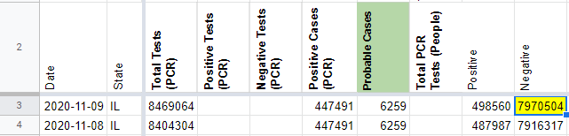
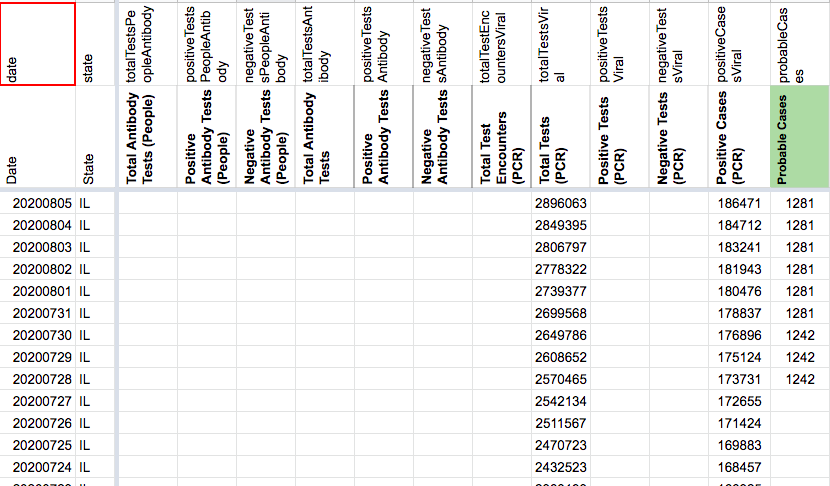
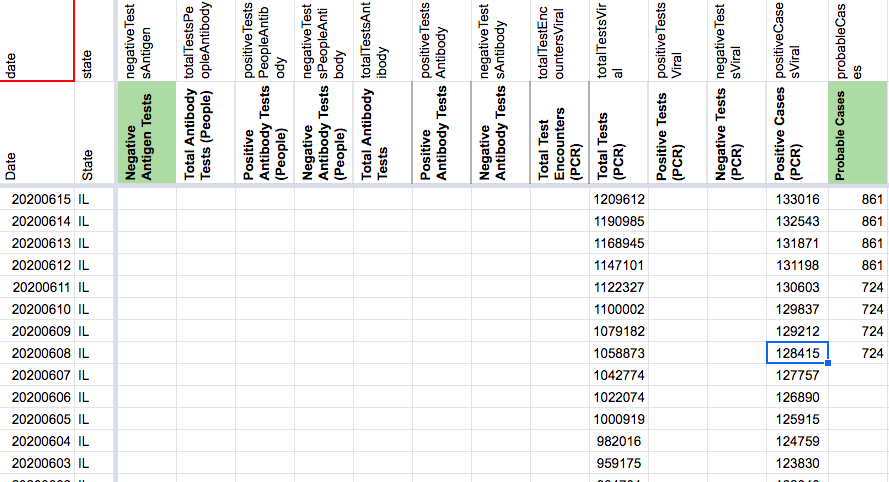
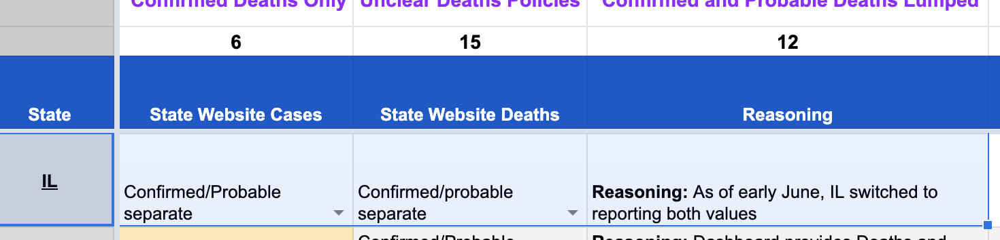
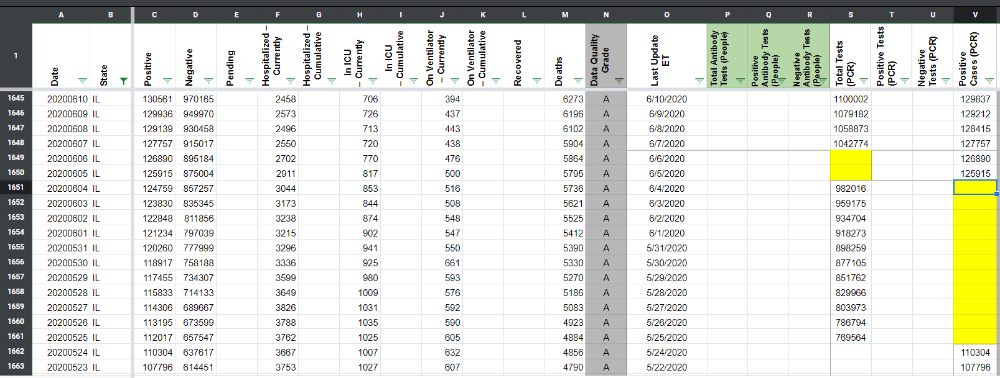
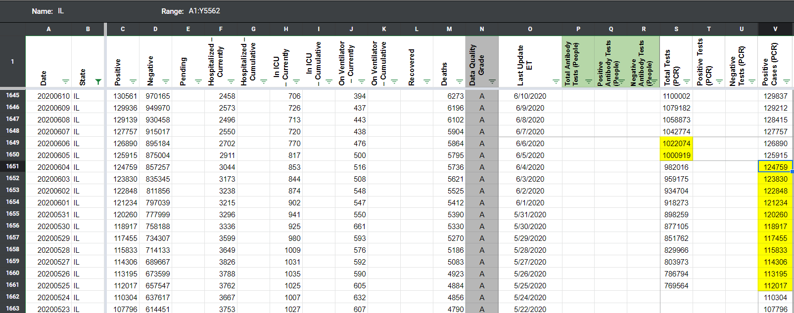
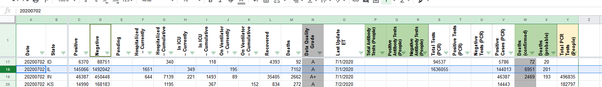
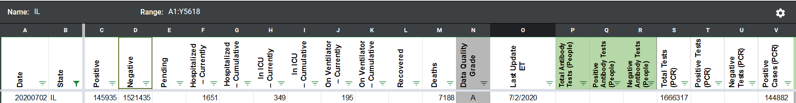
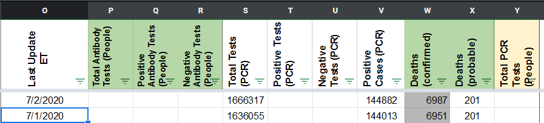

| Date | Number | Title |
|---|---|---|
| March 4, 2021, 2:53 PM PST | 1127 | [IL] Negative people/cases historical field removed from API |
| March 4, 2021, 2:53 PM PST | 1127 | [IL] Negative people/cases historical field removed from API |
| March 4, 2021, 2:12 PM PST | 1125 | [IL] backfill testing for Total Tests (Viral) |
| March 4, 2021, 2:12 PM PST | 1125 | [IL] backfill testing for Total Tests (Viral) |
| December 18, 2020, 4:40 PM PST | 1019 | [IL] Remove values carried over after Illinois stopped reporting a Confirmed and Probable case breakdown on 11/6 |
| November 10, 2020, 9:56 AM PST | 943 | [IL] Mistake in Negative PCR tests (people) |
| September 11, 2020, 8:00 AM PDT | 824 | [IL] Explicit Probables Backfill 6/8-7/27 |
| July 10, 2020, 7:51 AM PDT | 598 | [IL] PCL Cases Historicals |
| July 3, 2020, 12:55 PM PDT | 573 | [IL] 7/2 numbers weren't updated on dash, they are provided via a press release |
| March 31, 2020, 3:12 PM PDT | 94 | IL: Latent positive count updates |
#1127: [IL] Negative people/cases historical field removed from API
Issue number 1127
whobody opened this issue on March 4, 2021, 2:53 PM PST
Labels Data quality
State or US: [State name, or "US" if this is an issue with country-wide data] IL
Describe the problem We are clearing Negative people/cases for IL because we made the TTR switch.
Link to data source
Comments
#1127: [IL] Negative people/cases historical field removed from API
Issue number 1127
whobody opened this issue on March 4, 2021, 2:53 PM PST
Labels Data quality
State or US: [State name, or "US" if this is an issue with country-wide data] IL
Describe the problem We are clearing Negative people/cases for IL because we made the TTR switch.
Link to data source
Comments
#1125: [IL] backfill testing for Total Tests (Viral)
Issue number 1125
whobody opened this issue on March 4, 2021, 2:12 PM PST
Labels Data quality
State or US: [State name, or "US" if this is an issue with country-wide data] IL
Describe the problem We have a time series that fills in IL Total Tests (Viral) prior to May 31, which we did not have previously.
Link to data source http://www.dph.illinois.gov/content/covid-19-cases-tests-and-deaths-day
Comments
#1125: [IL] backfill testing for Total Tests (Viral)
Issue number 1125
whobody opened this issue on March 4, 2021, 2:12 PM PST
Labels Data quality
State or US: [State name, or "US" if this is an issue with country-wide data] IL
Describe the problem We have a time series that fills in IL Total Tests (Viral) prior to May 31, which we did not have previously.
Link to data source http://www.dph.illinois.gov/content/covid-19-cases-tests-and-deaths-day
Comments
#1019: [IL] Remove values carried over after Illinois stopped reporting a Confirmed and Probable case breakdown on 11/6
Issue number 1019
jaclyde opened this issue on December 18, 2020, 4:40 PM PST
Labels Data quality not stale
State: Illinois
Issue: On November 6, 2020, Illinois announced that they "will report confirmed cases and probable cases combined" and no longer provide a breakdown on confirmed and probable cases separately. We carried over the last available values, but the breakdown has not returned, so the values are out of date and potentially confusing. We will be keeping the time series as provided by the state, but removing the carried over values from November 7th, 2020, forward.
Comments
- [x] make GH issue
- [x] double check the metrics aren't being reported somewhere by the state
- [x] add public note - there was a public note already, I've cleaned it up some but will need to remove last sentence of Nov 6 note when values are removed
- [x] add chart annotation
- [x] remove carried over values
- [x] null out source notes
- [x] null out WS2 values
- [x] revisit public note
This issue has been automatically marked as stale because it has not had recent activity. It will be closed if no further activity occurs. Thank you for your contributions!
Values removed: Changes (1).txt
#943: [IL] Mistake in Negative PCR tests (people)
Issue number 943
the-daniel-lin opened this issue on November 10, 2020, 9:56 AM PST
Labels Backfill Data quality
State or US: Illinois
Describe the problem On 11/6/20, Illinois stopped reporting their confirmed/probable cases breakdown. Since that day, Data Entry has been subtracting the lumped PCR/antigen positive number from the lumped PCR/antigen total tests number to calculated Negative PCR tests (people). On 11/9, the checker subtracted the un-updated confirmed number from 11/6 from the lumped total test number. We need to backfill the negative value for 11/9.
Link to data source http://www.dph.illinois.gov/topics-services/diseases-and-conditions/diseases-a-z-list/coronavirus
Comments
BEFORE: 
AFTER: 
#824: [IL] Explicit Probables Backfill 6/8-7/27
Issue number 824
jesseandersonumd opened this issue on September 11, 2020, 8:00 AM PDT
Labels Data quality
State or US: IL
Describe the problem CTP didn't have a column for probables until 7/28 and we started a confirmed cases column on 4/29. IL didn't start separating out confirmed and probables until 6/8.
Action plan Calculate probables as positive - positive(PCR) from 6/9 to 7/28.
Comments
BEFORE: 
AFTER: 
DC'd by DZL 9/24 13:00
#598: [IL] PCL Cases Historicals
Issue number 598
pscsharon opened this issue on July 10, 2020, 7:51 AM PDT
Labels Backfill PCL/SVP Historicals
Issue: Our coverage IL has a gap in Positive Cases (PCR) between 6/04 and 5/25, although confirmed cases were being reported during that time. There is also a two day gap between 6/5-6/6 in Total Tests (PCR)
Data source: IL state dashboard charts
Link to data source http://www.dph.illinois.gov/topics-services/diseases-and-conditions/diseases-a-z-list/coronavirus
Comments
Note that our research found IL only started separating confirmed and probable in June. The bar chart now displayed by IL for historical cases (when hovering over each bar) is likely only confirmed, but we may need to check.
The data for this bar chart
It's a CSV file with TXT extension so GitHub agrees to upload it as is, without zipping.
date_totalTested_confirmedCases_deaths_20200712.txt
Using the above CSV file
BEFORE:

AFTER: 
#573: [IL] 7/2 numbers weren't updated on dash, they are provided via a press release
Issue number 573
muamichali opened this issue on July 3, 2020, 12:55 PM PDT
Labels Data quality
State or US: IL
Describe the problem 7/2 numbers weren't updated on dash, they are provided via a press release
Link to data source http://dph.illinois.gov/news/public-health-officials-announce-869-new-confirmed-cases-coronavirus-disease
Comments
DATA
Currently, IDPH is reporting a total of 144,882 cases, including 6,987 deaths Within the past 24 hours, laboratories have reported 30,262 specimens for a total of 1,666,317.
BEFORE 
came here to post this.
I just contacted the state department of health -- they've updated the page. Do a hard refresh of the page if it's not showing updated numbers. I expect the covid tracking project's data will be updated withe the new figures whenever they run an update next.
The press release linked above does not include probable counts -- carrying over probable cases and deaths from the previous day (1053 probable cases and 201 probable deaths). AFTER  
#94: IL: Latent positive count updates
Issue number 94
colintj opened this issue on March 31, 2020, 3:12 PM PDT
Labels Data source stale
The screenshot from 6:02 pm has the data (160 positives) that was previously populated on 2020-03-17 for Illinois:
https://covidtracking.com/screenshots/IL/IL-20200317-180220.png
As of this posting, the API and website return 28 positives for that date.
https://covidtracking.com/data/state/illinois/#history
Comments
This issue has been automatically marked as stale because it has not had recent activity. It will be closed if no further activity occurs. Thank you for your contributions!
This issue has been closed because it was stale for 15 days, and there was no further activity on it for 10 days. You can feel free to re-open it if the issue is important, and label it as "not stale."
Changes (1).txt